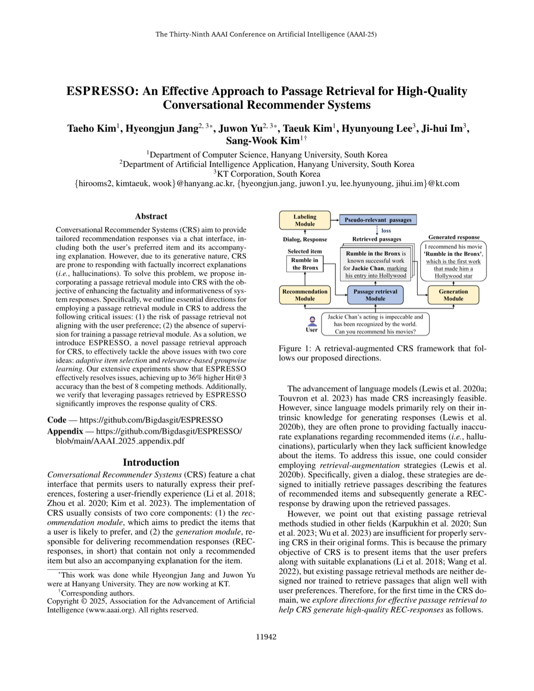

A passage retrieval method for conversational recommender systems

Conversational Recommender Systems (CRS) not only suggest items but also generate natural-language explanations for their recommendations. However, these explanations are often factually incorrect or generic. Incorporating passage retrieval can ground responses in real information, but two critical challenges remain: (1) retrieved passages may not reflect actual user preferences, and (2) there is typically no training supervision available for the passage retrieval module in CRS settings.
ESPRESSO achieves up to 36% higher Hit@3 accuracy compared to the best of 8 competing methods. Integrating ESPRESSO-retrieved passages also meaningfully improves the overall quality and factual grounding of CRS responses.
As conversational AI becomes more prevalent in e-commerce and content platforms, providing accurate and trustworthy explanations alongside recommendations is essential for user trust. ESPRESSO demonstrates that targeted passage retrieval can substantially improve explanation quality in CRS without requiring expensive manual annotation.